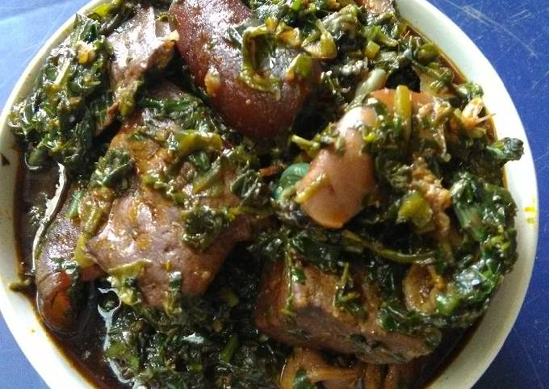

Edikang Ikong

Edikang ikong soup
Edikang ikong Edikang Ikong is a vegetable soup variant owned by people from Southern Nigeria, specifically Cross River State.
The vegetables, which are a combination of pumpkin leaves (ugwu) and malabar spinach (water leaf) are cooked in a pepper mix with proteins, dried cod, cow skin cuts, and dried shrimp.
Ingredients
- I kg (5 bunch of Pumpkin leave) same as Ugwu
- 500 g water leaves
- 2 handful Ntong (scent leaves or Effirin)
- I kg Assorted Meat
- Ponmo
- 200 ml (2 cups) Palm oil
- I medium onions
- I Cup of periwinkles
- Head I Large stockfish
- 2 Medium Sized Smoked Fish
- 6 fresh Yellow pepper (pounded)
- 1 Cup of pounded Crayfish
- 1/2 Cup Dried Shrimps (slightly pounded)
- 1 tbs black Pepper
- 2 stock cubes
- Salt
Steps
- Before cooking, I like to pick, wash properly and allow to drain then slice all the vegetables. Ugwu, water leaves and scent leaves. Put each in separate bowls.
- Wash you Meats, seasons accordingly and cook till almost tender, then add the washed Stockfish head and cook... Make sure the meat stock is almost Dried...we don't need water in the soup, cause the water leaves and palm will generate stock for the soup.
- Before the stock Dried out completely, add water leaves, pour in the palm oil, add Periwinkles, pounded fresh pepper and stir properly. cook for 3-5 mins. (Ensure you don't over cook the water leaves)
- Add in Ugwu, scent leaves, pounded shrimps, smoked fish, black pepper, stock cubes and stir the content of the pot very well..Cover the pot and leave to cook for 5mins
-
Lastly, according to my Grandma's recipe, you add the pounded Crayfish and taste for salt, give it a stir and that's it.(pls be mindful of the salt and stock cubes, cause vegetable soup can easily become salty)
- Remove from fire and enjoy with Fufu, Pounded Yam, Semo, Samvita or even Eba.